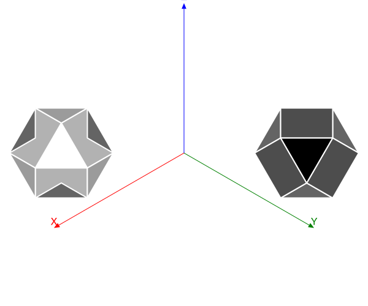

Tools
There are few useful tools that might help you explore.
Getting your hands dirty
Suppose you want to remove the front-facing faces of an object, in order to see inside. That's possible, but a bit of code is needed.
eyepoint(200, 200, 200)
axes3D(300)
setlinejoin("bevel")
include(dirname(pathof(Thebes)) * "/../data/moreobjects.jl")
objectfull = make(cuboctahedron, "the full object")
objectcut = make(cuboctahedron, "the cut-open object")
map(o -> scaleby!(o, 60, 60, 60), (objectfull, objectcut))
function cullfrontfaces!(m::Object, angle;
eyepoint::Point3D=eyepoint())
avgs = Float64[]
for f in m.faces
vs = m.vertices[f]
s = 0.0
for v in vs
s += distance(v, eyepoint)
end
avg = s/length(unique(vs))
θ = surfacenormal(vs)
if anglebetweenvectors(θ, eyepoint) > angle
push!(avgs, avg)
end
end
neworder = reverse(sortperm(avgs))
m.faces = m.faces[neworder]
m.labels = m.labels[neworder]
return m
end
function drawobject(object)
pin(object, gfunction = (args...) -> begin
vertices, faces, labels = args
setopacity(0.8)
sethue("grey80")
if !isempty(faces)
@layer begin
for (n, p) in enumerate(faces)
poly(p, :fillpreserve, close=true)
@layer begin
sethue("grey20")
strokepath()
end
end
end
end
end)
end
sortfaces!.((objectcut, objectfull))
cullfrontfaces!(objectcut, π/3)
translate(-200, 0)
drawobject(objectcut)
translate(400, 0)
drawobject(objectfull)
@show length(objectcut.faces)
@show length(objectfull.faces)length(objectcut.faces) = 10 length(objectfull.faces) = 14
The object on the left has had its four frontfacing faces removed. The one on the right is intact.

Geometry
There are some basic geometry utility functions - some of them are analogous to their Luxor 2D counterparts.
General
Thebes.axes3D — Functionaxes3D(n=100)Draw labelled 3D axes at (0, 0, 0) with length n.
Thebes.carpet — Functioncarpet(n; kind=:circular)Draw a circular carpet centered at the origin, using current Luxor parameters.
If kind is not :circular, the carpet will be a square.
Points that can't be rendered are not included in the final shape.
Thebes.drawcube — Functiondrawcube(n=10, action=:stroke)Draw a cube.
Distances
Luxor.between — Functionbetween(p1::Point3D, p2::Point3D, x=0.5)
between((p1::Point3D, p2::Point3D), x=0.5)Find a point on a line between two 3D points. If x is 0.5, the returned point should be halfway between them.
Luxor.distance — Functiondistance(p1::Point3D, p2::Point3D)Return the distance between two points.
Luxor.midpoint — Functionmidpoint(pt1::Point3D, pt2::Point3D)Find the midpoint between two points. See also between().
Rotations
Work in progress:
Thebes.rotateX — FunctionrotateX(pt3D::Point3D, rad)Return a new point resulting from rotating the point around the x axis by an angle in radians.
Rotations are anticlockwise when looking along axis from 0 to +axis.
Thebes.rotateY — FunctionrotateY(pt3D::Point3D, rad)Return a new point resulting from rotating the point around the y axis by an angle in radians.
Thebes.rotateZ — FunctionrotateZ(pt3D::Point3D, rad)Return a new point resulting from rotating the point around the z axis by an angle in radians.
Thebes.rotateby! — Functionrotateby!(ptlist::Array{Point3D, 1}, angleX, angleY, angleZ)Return the list of points with each one rotated around the x, y, and z axes by angleX, angleY, angleZ.
rotateby!(ptlist::Point3D, existingpt::Point3D, angleX, angleY, angleZ)Rotate each point in the list by angleX, angleY, angleZ around another point.
rotateby!(m::Object, angleX, angleY, angleZ)Rotate an object around the x, y, and/or z axis by angleX, angleY, angleZ.
rotateby!(m::Object, pt::Point3D, angleX, angleY, angleZ)Rotate an object around a point by angleX, angleY, angleZ.
Thebes.rotateby — Functionrotateby(pt::Point3D, angleX, angleY, angleZ)
rotateby(ptlist::Array{Point3D, 1}, angleX, angleY, angleZ)Return a new point/list of points resulting from rotating around the x, y, and z axes by angleX, angleY, angleZ.
rotateby(newpt::Point3D, existingpt::Point3D, angleX, angleY, angleZ)Return a new point/list resulting from rotating each point by angleX, angleY, angleZ around another point.
rotateby(m::Object, angleX, angleY, angleZ)Rotate a copy of the object by angleX, angleY, angleZ.
rotateby(m::Object, pt::Point3D, angleX, angleY, angleZ)Rotate a copy of the object around a point by angleX, angleY, angleZ.
Position and scale
You can change the position and scale of things:
Thebes.moveby! — Functionmoveby!(ptlist::Point3D, x, y, z)
moveby!(ptlist::Point3D, pt::Point3D)Move all points in the list by a vector.
moveby!(m::Object, x, y, z)
moveby!(m::Object, pt::Point3D)Set the position of object to Point3D(x, y, z).
Thebes.moveby — Functionmoveby(m::Object, x, y, z)
moveby(m::Object, pt::Point3D)Set the position of a copy of the object to Point3D(x, y, z).
Thebes.scaleby! — Functionscaleby!(m::Object, x, y, z)
Scale object by x in x, y in y, and z in z.
Coordinates
Thebes.sphericaltocartesian — Functionsphericaltocartesian(rho, theta, phi)Return Point3D(x, y, z) of (rho, theta, phi).
Thebes.cartesiantospherical — Functioncartesiantospherical(x, y, z)Return (phi, rho, theta) of (x, y, z).
Thebes.dotproduct3D — Functiondotproduct3D(a::Point3D, b::Point3D)Finds the dot product of a and b
Thebes.magnitude — Functionmagnitude(a::Point3D)Calculates magnitude of a.
Thebes.anglebetweenvectors — Functionanglebetweenvectors(v1::Point3D, v2::Point3D)Calclates anglebetweenvectors
Thebes.surfacenormal — Functionsurfacenormal(ptlist)Finds one of these.